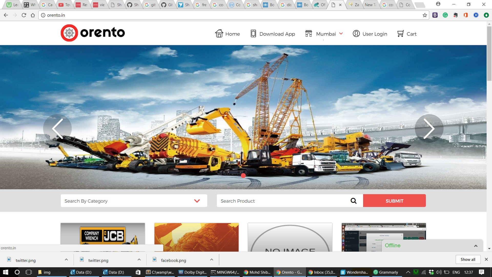
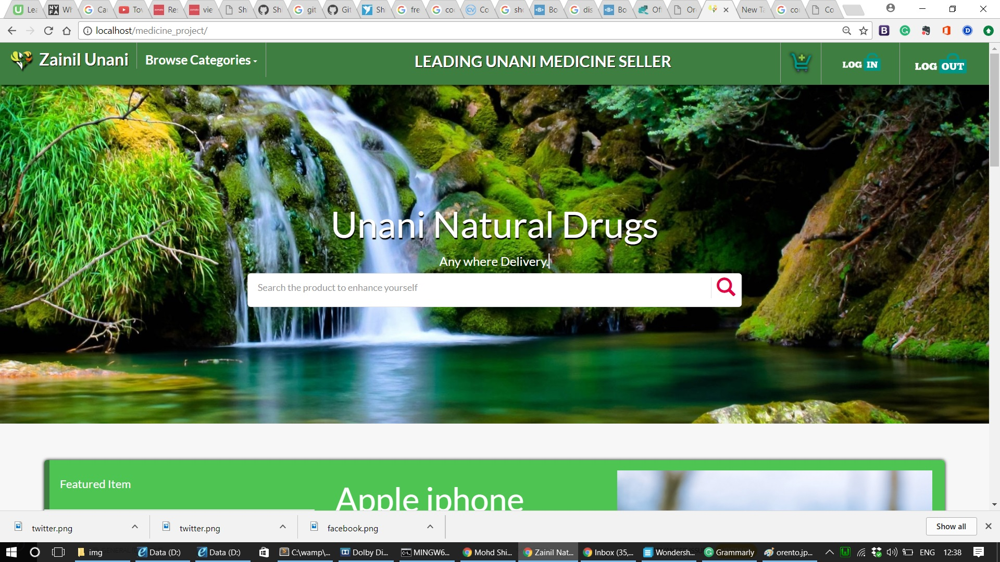
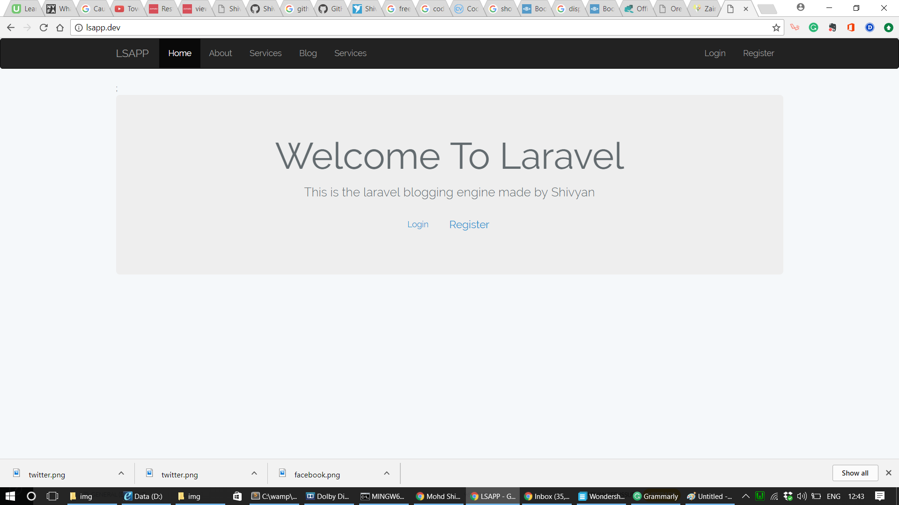

Hello,
My name is Mohd Shivyan and I am a web developer
# About Me
I am an experienced and energetic full stack web developer with around 4 years of personal and professional experience in web development alongside with competitive programming, which provided me with an exposure to a tech industry and simultaneously has also increased my problem-solving and communication skills(especially with clients). I am a techie artist who really wants to make a difference in tech with his out of box thinking. Right now I am looking for a job where I can completely showcase my skills.My future goal is to interconnect human brain with technology to a much higher level. According to my colleagues, my brain works in a too much different way that mostly yield a unique solution that no one can easily thinks.
#Contact Info
 91-7017585022
91-7017585022 smarty.shibyan@gmail.com
smarty.shibyan@gmail.com Github https://github.com/Shivvyyy
Github https://github.com/Shivvyyy- Freelancer https://www.freelancer.com/u/Shivyan
# Education & Experience
CodeYeti - Mobile & Web App Development Company
Done web developer internship. Built two industry level web projects there and worked solely on the web programming part of those projects.Learned many web technoligies by being in a team of 60-70 smart programmers. Mainly populated data using REST API approach and used many third party API's there.
Student Print Media Newspaper Company
Working as a freelancer for their every technical problem from web development to hardware malfunctioning. Learnt on-time task completion by being a virtual technical head of this company since a long time.
Dr MPS College Of Business Studies, Agra
Completed BCA(Bachelor Of Computer Application alongside with PGDMA(Post Graduated Diploma In Management Application) with around 70% marks. Made many businees startegy presentations and coordinated many tech events in the 3 years of college. Also many times scored highest in some subjects.
S.R.K College Of Computer Science
Have done PGDCP(Post Graduated Diploma In Computer Application) which enriched my deep understanding of computer programming by unravelling the logic behind every programming syntax and problem.
Zainil Unani Natural Drugs
Have become a virtual CTO for this company and solely buildiing every aspect of their ecommerce website.
St. Johns convent School
Completed my 12th from a christian School
# Languages and Platforms Skills
Key Expertise
Projects:
Shoutbox, Admin panels, CMS templates,3 live Ecommerce projects with vendor and seller, Vampire Attack(A networking project), CSS animation projects, Leave Management Project(College Project), blogging engine using laravel and many other Javascript and Jquery projects.Knowledge:
Web scrapping,Less,Sass,Git,Bootstrap,CSS animations,Web scrapping,Javascript/Jquery animations,OOPS,MvC's framework,client dealing,3rd party API's like google maps,facebook oauth etc,node js,JSON,Rest API'S,Backend and frontend programming,CSS flexbox,parallax effect,optimized coding,postman etc
# Achievements
# Recent Projects
- 
- 
- 